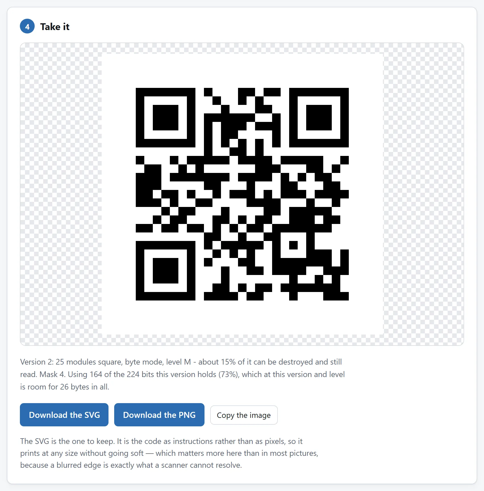
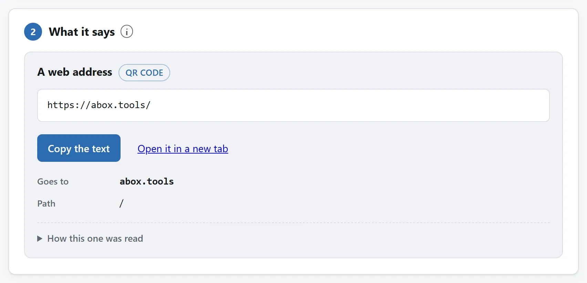

简短的答案
- 制作。打开二维码与条形码生成器，选择链接、Wi-Fi 或联系人等用途。检查页面展示的实际编码字符串。打印导出 SVG，屏幕使用导出 PNG。
- 试印一张。按真正的尺寸和纸张打印，不要直接印两百份。
- 验证。在现场光线下，用手机斜着拍试印品，再把照片放进二维码与条形码识读器。它显示解码内容，链接还会显示编码地址中的主机。符合预期后，再用实际使用的手机测试，另外检查目的地。
两种工具都在浏览器内处理，不发送内容。制作或解读 Wi-Fi 码时，工具不会把密码传出去。

印刷和目的地都要检查
菜单、活动报名或手册把完整 HTTPS URL 放进生成器，保留四模块边距，把 SVG 加到最终版式。按成品大小打印，贴到实际表面，从访客站位扫描。读解码地址，再主动在手机打开，完成预期动作。字符串正确仍可能指向失效页面或意外登录要求。
名片还要保存到手机，核对姓名、号码和邮箱。一页多码分别拍，读码器每图只找一个码。换 URL、颜色、大小或版式后重测，大量印刷前多试一部手机。
验证真正能拦下什么
- 拼写错误。最常见的问题是码内网址，不是二维码本身。重新读取，才能检查实际编码内容，而不只是原本想粘贴什么。
- 尺寸和距离。隔着房间扫描，需要比名片更大的模块。从实际站位拍试印品，才是有效测试。生成器会说明纠错等级带来的密度成本。
- 颜色。这个识读器支持反色码，不代表每台手机都支持。先用浅底深色模块，再测试品牌颜色的实际印刷品。
- 折痕和反光。Reed–Solomon 纠错能恢复部分受损数据，但百分比不是保证能遮住的图像面积。定位图案必须可读。要放在户外的海报适合更高纠错等级，同时接受更密的二维码。

同一个识别器，用在不是你做的码上
验证也是打开别人印的二维码时更稳妥的步骤。识读器在打开之前展示完整编码地址和主机，并指出值得检查的迹象，比如 @ 前的用户名、形似字符或已知短链接服务。它不跟随重定向，也不寻找短链接背后的最终目的地。停车计费器贴纸和会议挂牌都值得这样检查。工具不会代你打开，也不会发送扫描内容。
如果你每周都做这件事
生成和检验分住在两个页面上是有意为之：每一个只做一件事，每一个都能独自证明没有任何东西离开你的电脑。但两个都是开源的：MIT 许可证，零依赖的 ES 模块——生成器的编码器和识别器的 Reed-Solomon 解码器，各配一份把它讲清的 README。
如果每周都有码从你桌上发出去，就把代码代理指向代码仓库，让它做一个页面：生成之后立刻把画出来的码送回解码器过一遍——每次导出都自带一次自检。这些模块就是写来被读的，把它们带走，正是许可证存在的意义。